Periodic Orbit Families
This is for the three-body system of the Sun, Earth, and Moon. Creates plots for all families listed.
Contents
See also
PropagateCRTBP
%-------------------------------------------------------------------------- % Copyright (c) 2018 Princeton Satellite Systems, Inc. % All rights reserved. %-------------------------------------------------------------------------- % Since 2018.1 %-------------------------------------------------------------------------- familiesToPlot={'16','16p','17','17p','18','18p','19','19p','20','20p','26','26p'}; for familyIndex=1:numel(familiesToPlot) familyFile = strcat('f',familiesToPlot{familyIndex},'Ref.mat'); familyPrime = familiesToPlot{familyIndex}(end)=='p'; familyName = ['Markellos Family f',familiesToPlot{familyIndex}]; if familyPrime familyName = [familyName(1:end-1),'^\prime']; end s = load(familyFile); [~, y] = PropagateCRTBP(s.d.initialState',0,s.d.period,s.d.mu); Plot2D(y(1,:),y(2,:),'x','y',familyName) hold on; axis equal; xMax = max(max(y(1,:)),max(-y(1,:))); yMax = max(max(y(2,:)),max(-y(2,:))); set(gca,'xLim',[-1,1]*xMax*1.2); set(gca,'yLim',[-1,1]*yMax*1.2); xlim = get(gca,'XLim'); x = (0:0.01:1)*(xlim(2)-xlim(1))+xlim(1); ylim = get(gca,'yLim'); y = (0:0.01:1)*(ylim(2)-ylim(1))+ylim(1); x = repmat(x,[size(y,2) 1]);y=repmat(y',[1 size(x,2)]); z = zeros(size(x)); zX = zeros(size(x(:)')); z(:) = CRTBPJacobiConstant([x(:)';y(:)';zX;zX;zX;zX],s.d.mu); contour(x,y,z,[1 1]*CRTBPJacobiConstant(s.d.initialState',s.d.mu)); plot(0,0,'rx'); legend('Trajectory','Jacobi-integral bounding surface','Earth') text(xlim(1),0,'\leftarrow Sun'); end %-------------------------------------- % $Id: 97ebb1f275d1c6a7ded1e2a7d1af29762722a8b9 $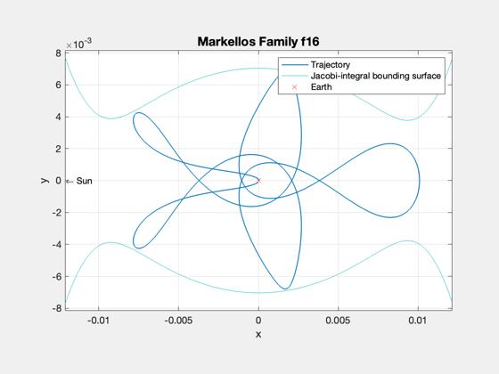 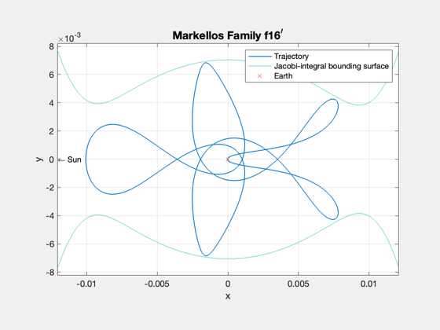 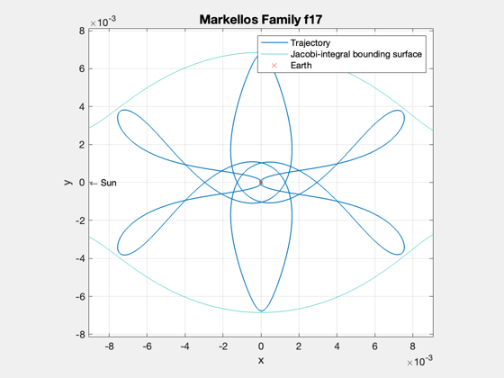 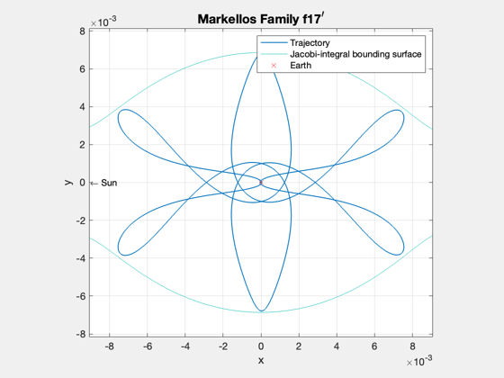 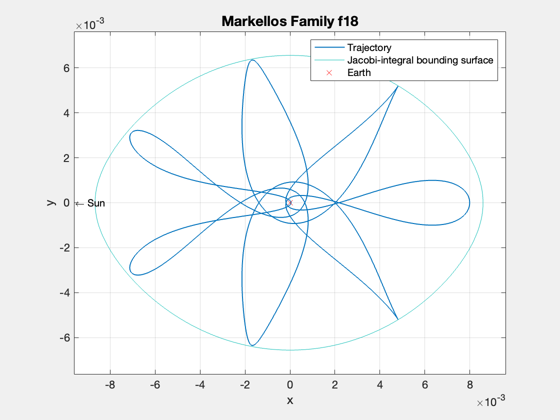 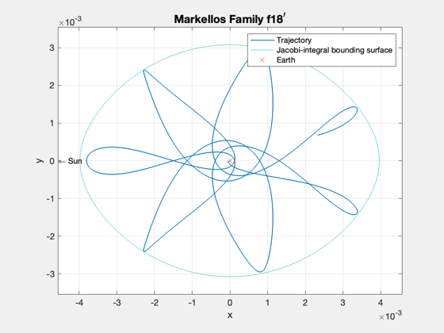 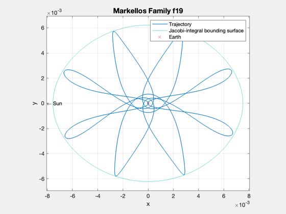 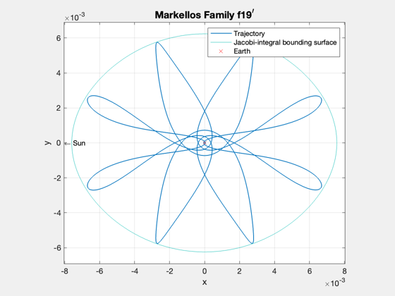
 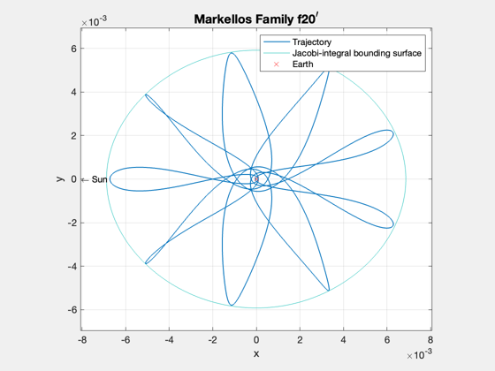 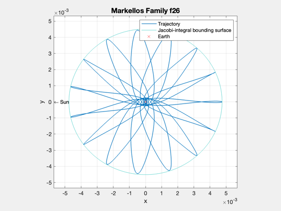 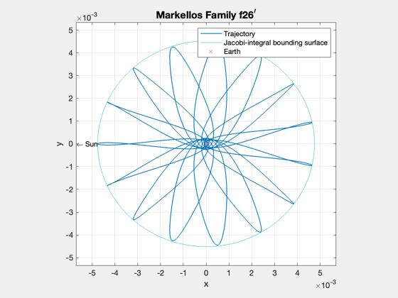
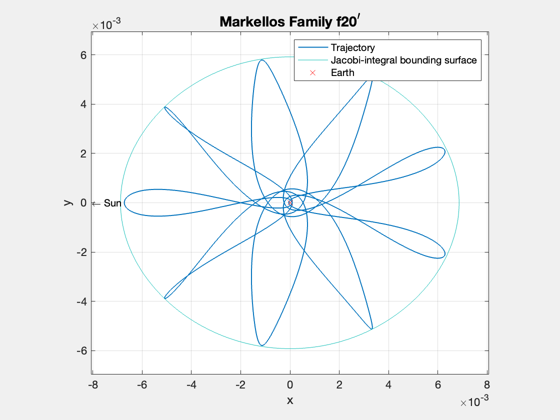 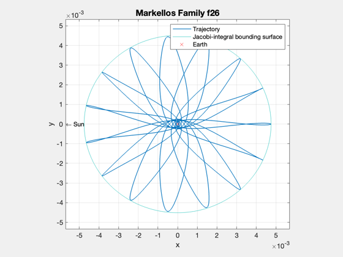 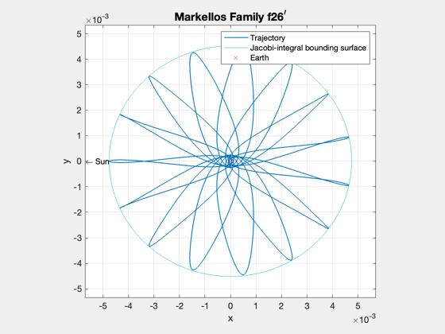